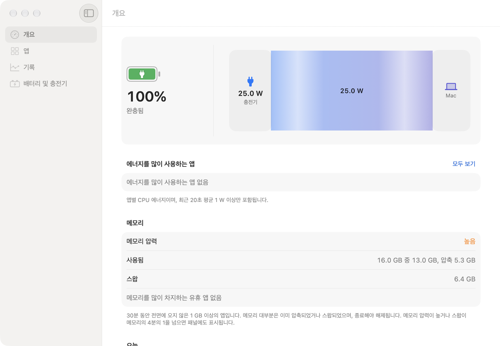
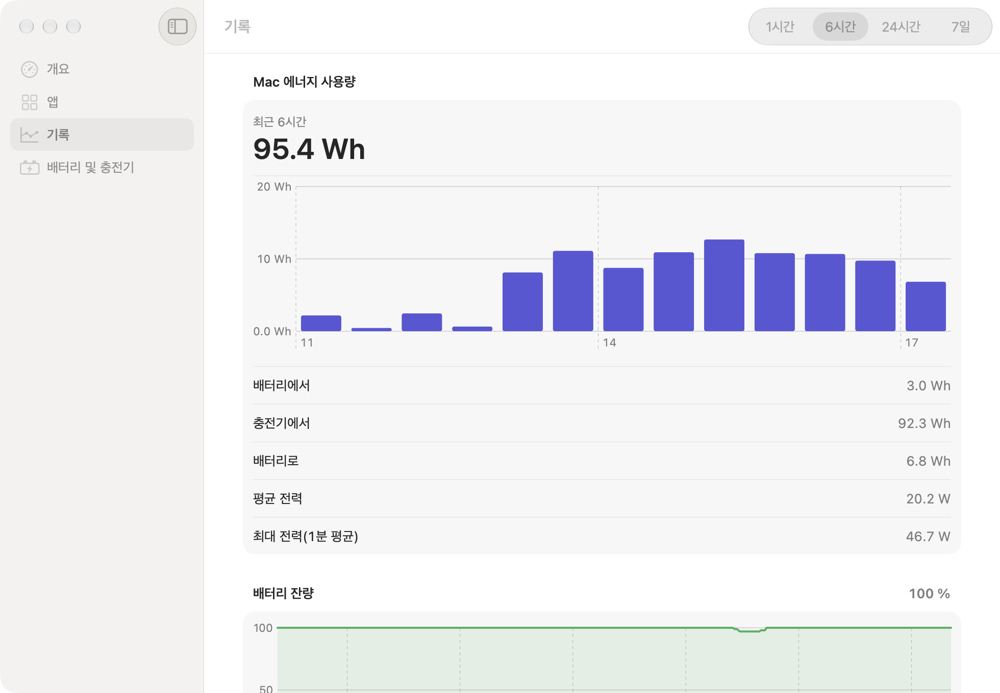

MacBook을 위한 오픈 소스 전력 및 에너지 모니터
전력이 어디로 가는지.
충전기, 배터리, Mac. 2초마다, 메뉴 막대에서 바로.
MacBook을 위한 오픈 소스 전력 및 에너지 모니터
충전기, 배터리, Mac. 2초마다, 메뉴 막대에서 바로.

Rill은 MacBook용 무료 오픈 소스 메뉴 막대 앱입니다. 충전기가 공급하는 전력, Mac이 사용하는 전력, 배터리로 들어가거나 나오는 전력을 실시간 와트로 보여 줍니다. 에너지를 가장 많이 쓰는 앱을 보여 주고, 메모리 압박을 지켜보며, 7일간의 기록을 보관합니다. macOS가 이미 제공하는 데이터만 읽고, 특별한 권한이 필요 없으며, 업데이트를 확인할 때만 인터넷에 연결합니다.
활성 상태 보기도, 추측도 필요 없습니다.
전원 연결 시에는 충전기 입력을, 배터리 사용 시에는 방전량을 표시합니다.
충전기, 배터리, Mac 사이에 전력이 어떻게 나뉘는지. 띠의 굵기가 곧 와트입니다.
앱별 에너지, CPU, 메모리. 응답 없는 앱을 찾아 종료합니다.
메모리 압박과 스왑을 한눈에. 메모리가 부족하면 메모리를 많이 차지한 채 쉬고 있는 앱을 보여 줍니다.
하루하루 사용한 에너지와 함께 전력, 충전량, 배터리 온도의 변화.
배터리 성능 상태, 충전 횟수, 충전기 정격, 협상된 전압, 지원하는 USB-C PD 단계.
1시간부터 7일까지. 기간별 에너지 사용량을 보여 주며, 포인터를 올리면 각 구간을 볼 수 있습니다.

터미널에서 한 줄이면 됩니다. 스크립트가 서명을 확인하고 Rill을 응용 프로그램에 넣습니다.
curl -fsSL https://raw.githubusercontent.com/chengffei/rill/main/install.sh | bash또는 디스크 이미지를 다운로드해 직접 설치하세요.
디스크 이미지를 열고 Rill을 응용 프로그램 폴더로 드래그합니다.
Rill을 이중 클릭합니다. macOS가 개발자를 확인할 수 없다고 하면 완료를 클릭합니다.
시스템 설정 › 개인정보 보호 및 보안에서 아래로 스크롤한 다음 그래도 열기를 클릭합니다.
배터리가 있는 Apple 실리콘 Mac과 macOS 26 이상이 필요합니다. 아이콘이 보이지 않으면 메뉴 막대 관리 앱이 숨겼을 수 있습니다.
Rill 설치와 사용에 관해 자주 묻는 질문.
Rill을 설치하세요. 메뉴 막대에 실시간 와트가 표시되고, 패널에서는 충전기 입력, 배터리 충·방전, Mac 자체 사용량으로 나누어 2초마다 업데이트합니다.
아니요. macOS가 모든 앱에 제공하는 전력 센서와 배터리 데이터, 그리고 사용자 자신의 프로세스 에너지만 읽습니다.
아니요. Rill은 지금 일어나는 일을 보여 줄 뿐, Mac의 충전 방식을 바꾸지 않습니다.
메모리 클리너를 실행하지는 않습니다. 메모리가 부족하면 메모리를 많이 차지하면서 30분 동안 사용하지 않은 앱을 보여 주므로 종료할 수 있습니다. 실제로 메모리를 확보하는 방법은 앱을 종료하는 것입니다.
네. Rill은 GPL-3.0 라이선스의 무료 오픈 소스입니다.
Rill은 Apple의 공증을 받지 않았습니다. 터미널 명령으로 설치하면 경고가 나타나지 않습니다. 또는 앱을 한 번 열어 경고를 닫은 다음, 시스템 설정 › 개인정보 보호 및 보안에서 그래도 열기를 클릭하세요.
아니요. 기록은 사용자의 Mac에만 30일간 보관됩니다. Rill은 업데이트 확인을 선택할 때만 인터넷에 연결합니다.